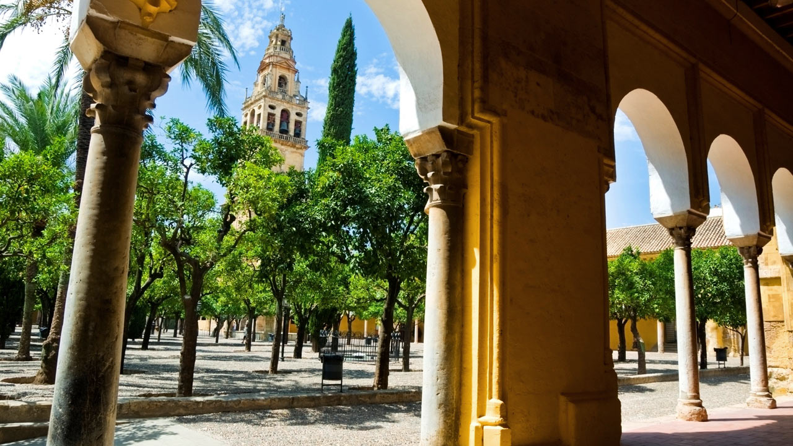
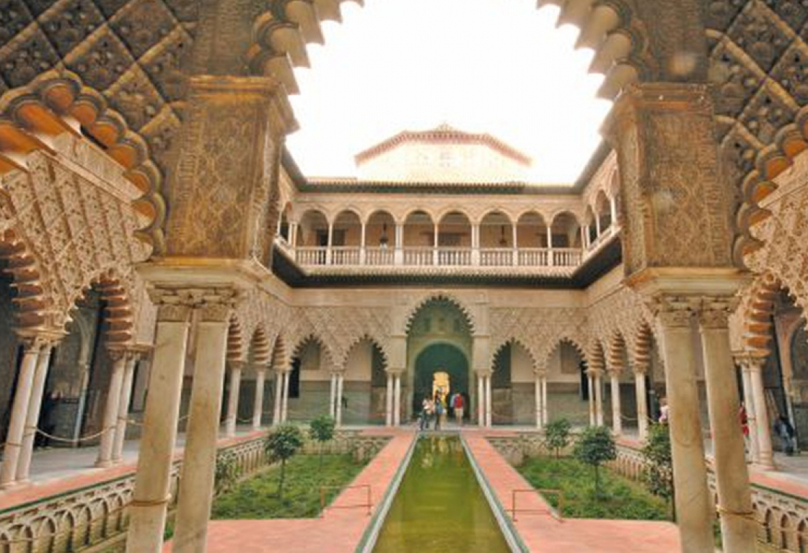

The buildings on this site are as complex as the extraordinarily rich history they illustrate. Historians believe that there had first been a temple to the Roman god, Janus, on this site. The temple was converted into a church by invading Visigoths who seized Córdoba in 572. Next, the church was converted into a mosque and then completely rebuilt by the descendants of the exiled Umayyads—the first Islamic dynasty who had originally ruled from their capital Damascus (in present-day Syria) from 661 until 750. A new capital Following the overthrow of his family (the Umayyads) in Damascus by the incoming Abbasids, Prince Abd al-Rahman I escaped to southern Spain. Once there, he established control over almost all of the Iberian Peninsula and attempted to recreate the grandeur of Damascus in his new capital, Córdoba. He sponsored elaborate building programs, promoted agriculture, and even imported fruit trees and other plants from his former home. Orange trees still stand in the courtyard of the Mosque of Córdoba, a beautiful, if bittersweet reminder of the Umayyad exile.
The building itself was expanded over two hundred years. It is comprised of a large hypostyle prayer hall (hypostyle means, filled with columns), a courtyard with a fountain in the middle, an orange grove, a covered walkway circling the courtyard, and a minaret (a tower used to call the faithful to prayer) that is now encased in a squared, tapered bell tower. The expansive prayer hall seems magnified by its repeated geometry. It is built with recycled ancient Roman columns from which sprout a striking combination of two-tiered, symmetrical arches, formed of stone and red brick.
